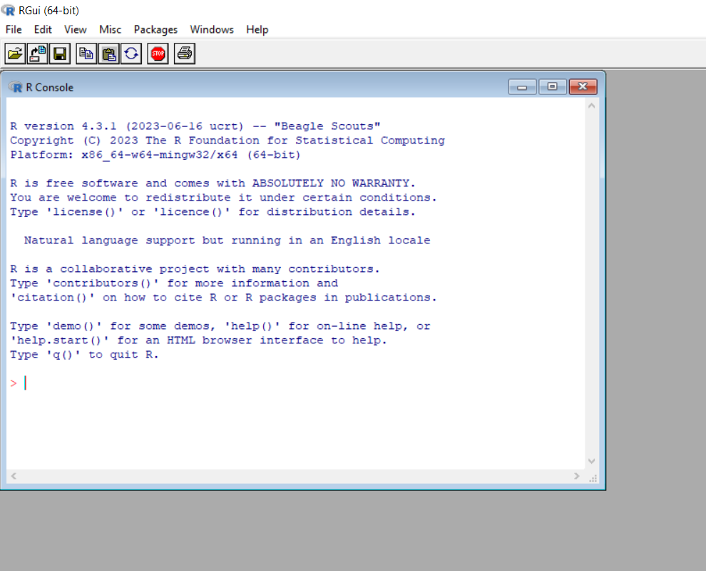
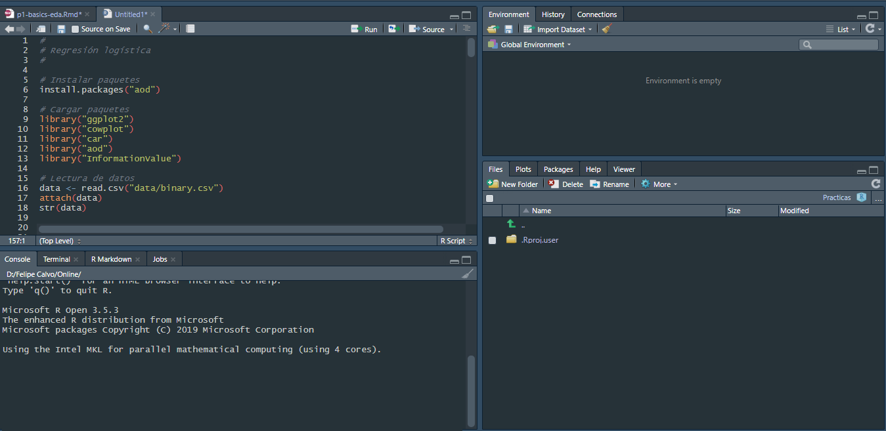
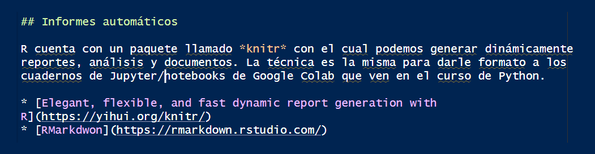
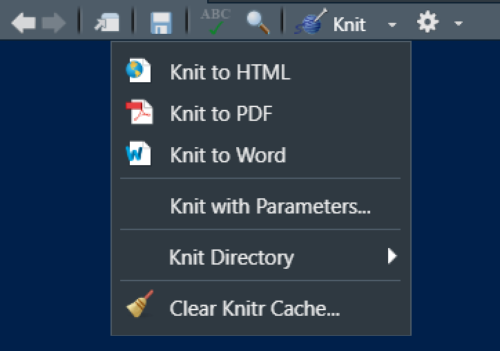
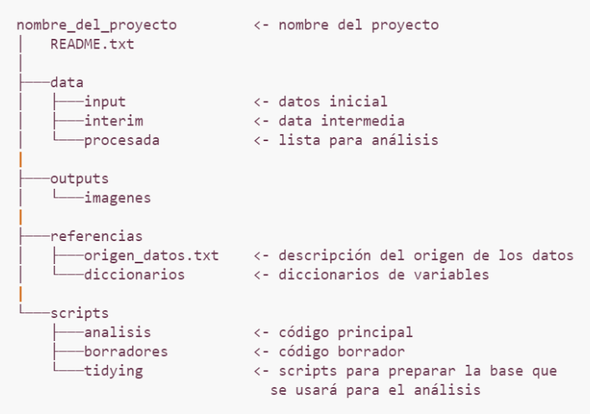

# Instalar el paquete installr
install.packages("installr")
# Cargar el paquete
library(installr)
# Comando para actualizar R
updateR()
# Comando para actualizar paquetes
update.packages(checkBuilt = TRUE, ask = FALSE)Configuración del ambiente de trabajo en R
Introducción
¿Qué es R?
- R es un lenguaje de programación de acceso libre, inicialmente diseñado y utilizado para realizar análisis estadístico.
- R también es un programa que instalamos para interpretar el código que escribimos.
- No fue creado por ingenieros de software para el desarrollo de software, sino por estadísticos como un ambiente interactivo para el análisis de datos.
- Además de R trabajaremos con RStudio, un IDE (Integrated Development Environment) que funciona como una “máscara” sobre R, con más herramientas y facilidades.
- La forma en que trabajaremos en R será a través de secuencias de comandos, conocidos como script, que se pueden ejecutar en cualquier momento. Estos scripts sirven como un registro del análisis realizamos.
¿Por qué nos gusta?
- Se ejecuta en todos los sistemas operativos principales: Windows, Mac Os, UNIX/Linux.
- Los scripts y los objetos de datos se pueden compartir sin problemas entre plataformas.
- No solamente permite realizar análisis estadístico, tambien es posible capturar información de páginas web, crear aplicaciones web, procesar texto, entre otras cosas.
- La comunidad que lo usa es muy amplia (= muchísima ayuda e información en internet).
- Stackoverflow
- R-Universe
- R-Bloggers
- Towards Data Science
- Entre otros.
- Es muy versátil para la creación de gráficos.
- Tiene disponibles muchos paquetes para diferentes tipos de análisis.
- ¡ES GRATIS!.
Particularmente útil para
- Manejar, combinar, limpiar y reorganizar datos.
- Análisis estadístico, álgebra matricial, modelado, estadística avanzada.
- Usar un entorno gráfico poderoso para explorar datos o para publicar.
- Trabajar de forma reproducible a partir de scripts.
Advertencias
- La documentación a veces es muy técnica o muy compacta.
- No todo el código ha sido exhaustivamente testeado, es decir, no siempre hay garantías que las cosas funcionen.
- La curva de aprendizaje es más difícil que programas como SPSS o Minitab (frente a Python, Stata o SAS es similar).
Instalación de R

Luego de instalar R, se recomienda instalar Rtools.
Interfaces de usuario

Front-ends gráficos
¿Cómo correr comandos/código?
- Si se está trabajando en el panel console solamente es necesario presionar “Enter”.
- Si se está trabajando en un script es posible ejecutar los comandos presionando “Ctrl+Enter”, o haciendo clic en el botón Run en la parte derecha superior del panel de edición.
Grupos de funciones (Paquetes)
- Cuando varias funciones son desarrolladas con un objetivos similar se suelen agrupar en paquetes, los cuales son colaborativamente distribuidos de forma gratuita.
- Para utilizar las funciones de un paquete es necesario instalar este paquete primero usando install.packages() y luego cargarlo en nuestro ambiente de trabajo usando library().
- Se instalan una vez y se llaman muchas veces.
- Lista de paquetes del CRAN
- Lista de paquetes de Bioconductor
- rdrr.io
Actualizar R (si ya lo tenías instalado) y los paquetes
Buenas prácticas
- Usar projects (proyectos) para ajustar el ambiente de trabajo para un proyecto.
- Por reproducibilidad, facilidad y para tener los proyectos mejor organizados es mucho mejor usar projects.
- La idea es que cada proyecto tenga su propio espacio y esté aislado, de tal manera que los recursos y códigos de uno no interfieran con otros proyectos.
- Como en todo lenguaje de programación, a todo lo que le pongamos un nombre (variables, funciones, datos) hay que ponerle un buen nombre.
- ¡Siempre usa scripts! (si nunca antes has creado un ‘programa para un computador’ en este curso lo vas a hacer)
- Si aparecen errores, se puede copiar y pegar el error en Google, ChatGPT o Gemini.
- Comentar el código anteponiendo el símbolo “#” en la línea donde se desea insertar el comentario. Este proceso se puede hacer apoyándose de herramientas de programación asistida.
- A R podemos preguntarle cosas.
?ayuda
?cualquier_cosa
?mean
??meanInformes automáticos
R cuenta con un paquete llamado knitr con el cual podemos generar dinámicamente reportes, análisis y documentos. La técnica es la misma para darle formato a los cuadernos de Jupyter/notebooks de Google Colab que ven en el curso de Python.


Creación de nuestro primer proyecto
- Abrir RStudio.
- Clic en File > New Project
- New Directory > New Project si queremos crear una nueva carpeta en nuestro equipo.
- Existing Directory si queremos alojar nuestro proyecto en una carpeta ya creada.
- Una vez creado el proyecto, podemos verificar que la ventana del programa se renombra y apunta a la carpeta donde está alojado.
- Clic en File > New File > R Script. En la ventana que se carga ya podemos empezar a ejecutar nuestro código.
